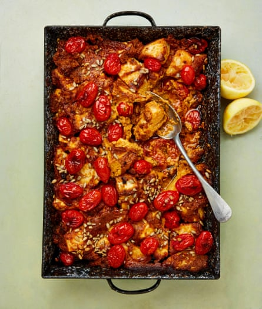

Chipotle, celeriac and tomato traybake

With some rice and a green salad, say, this is a meal in itself, but it also works as part of a larger spread.
Heat the oven to its highest setting – 240C (220C fan)/475F/gas 9. Put the first seven ingredients and the lemon zest in a blender or food processor, add 100ml of the olive oil, a teaspoon of salt and a good grind of pepper, then blitz to a paste.
Put the celeriac in a large oven tray, add a third of the paste, then toss to combine. Spoon over the rest of the paste, to coat. In a bowl, mix the tomatoes and remaining 50ml oil with a quarter-teaspoon of salt, then scatter all over the top of the celeriac mix.
Cover the tray with foil, then bake for 25 minutes, until the celeriac is cooked through. Remove the foil, sprinkle the extra sunflower seeds on top and bake uncovered for another 10 minutes, until the oil splits from the sauce and the tomatoes are nicely charred. Squeeze the lemon halves on top and serve straight from the pan.